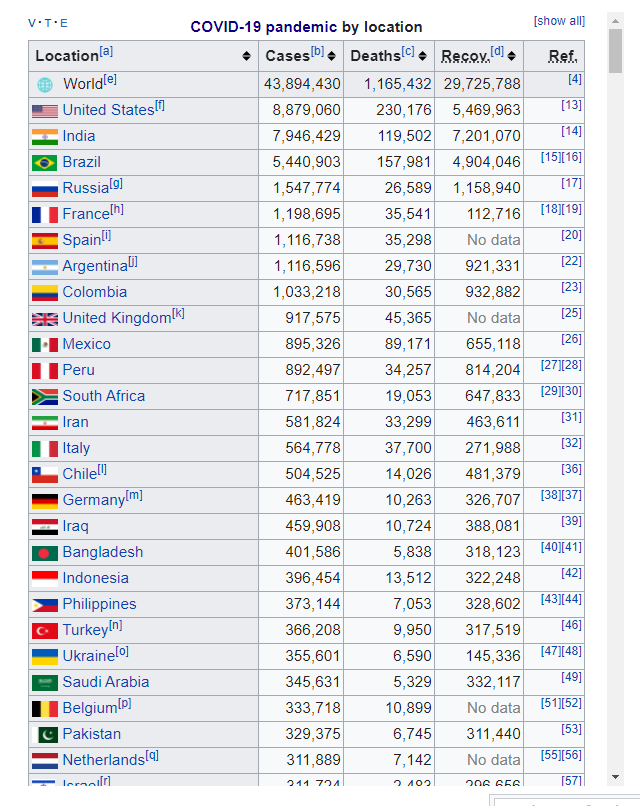
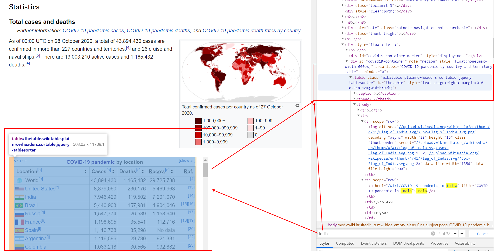
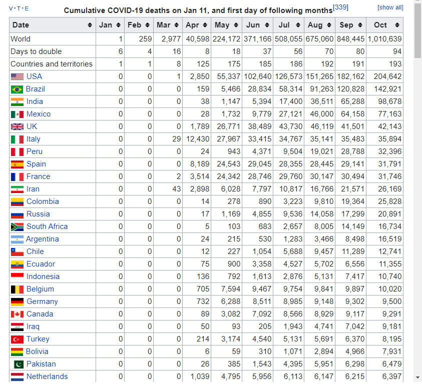
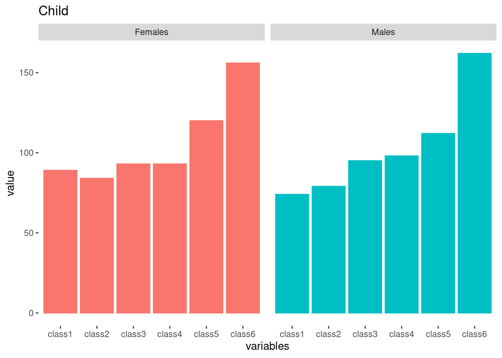
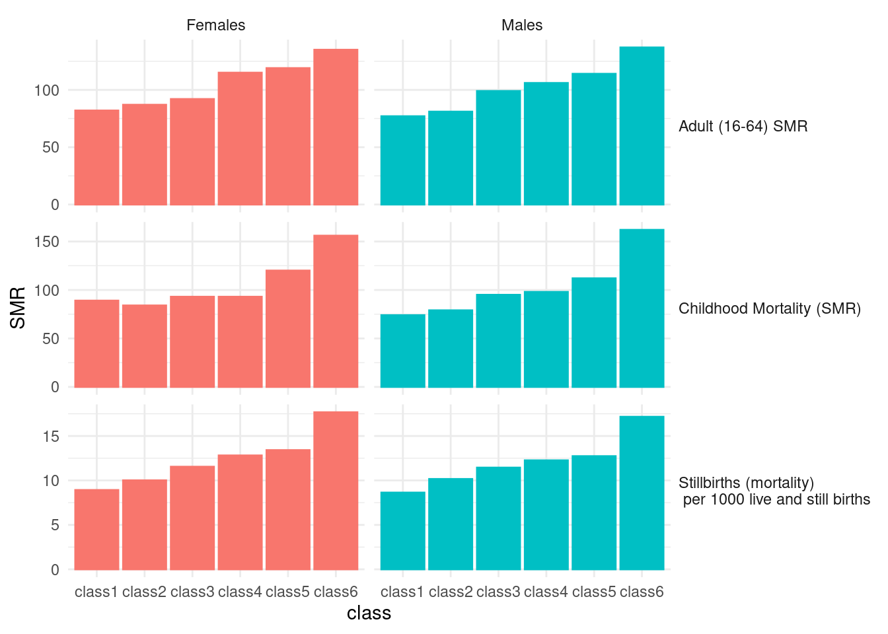

if(!require("tidyverse")) install.packages("tidyverse")
if(!require("rvest")) install.packages("rvest")
if(!require("DT")) install.packages("DT")
if(!require("readxl")) install.packages("readxl")
#if(!require("openxlsx")) install.packages("openxlsx")15 웹 스크래핑 I
이제 우리는 URL을 사용하여 웹에서 데이터와 텍스트를 다운로드하여 시각화 하는 실습을 할 것입니다.
라이브러리 불러오기
15.1 issue of COVID19 in Korea
아래의 URL에서 데이터를 다운로드 받아 보려고 합니다 . https://en.wikipedia.org/wiki/COVID-19_pandemic_by_country_and_territory
우선 위 주소로 가보겠습니다.

url <-"https://en.wikipedia.org/wiki/COVID-19_pandemic_by_country_and_territory"“read_html()은 URL과 그 내용을 읽을 수 있게 해줍니다.”
h <-read_html(url)
class(h)[1] "xml_document" "xml_node" h{html_document}
<html class="client-nojs vector-feature-language-in-header-enabled vector-feature-language-in-main-page-header-disabled vector-feature-sticky-header-disabled vector-feature-page-tools-pinned-disabled vector-feature-toc-pinned-clientpref-1 vector-feature-main-menu-pinned-disabled vector-feature-limited-width-clientpref-1 vector-feature-limited-width-content-enabled vector-feature-zebra-design-disabled vector-feature-custom-font-size-clientpref-0 vector-feature-client-preferences-disabled vector-feature-typography-survey-disabled vector-toc-available" lang="en" dir="ltr">
[1] <head>\n<meta http-equiv="Content-Type" content="text/html; charset=UTF-8 ...
[2] <body class="skin-vector skin-vector-search-vue mediawiki ltr sitedir-ltr ...#html_text(h) # just overview of HTML structure크롬을 통해 웹사이트에 접속하고 F12 버튼을 클릭하세요. 아래와 같이 오른쪽 창이 나타납니다. 이제 저는 Covid-19 표를 찾고 싶습니다. ctrl + F를 사용하여 검색 탭을 엽니다. 그리고 india를 입력하여 해당 표를 찾습니다.

URL에서 table 노드를 찾으려고 합니다.
tab <- h %>% html_nodes("table")아래에서 보는 것 처럼 tab[[2]] 일때도 있고, tab[[13]]일 때도 있습니다. 매번 page가 바뀌면 우리도 바꿔줘야 합니다.
tab2 <- tab[[13]] %>% html_table#openxlsx::write.xlsx(tab2, 'data/websc/tab2.xlsx')
#tab2 <- read_xlsx('data/websc/tab2.xlsx')
tab2# A tibble: 240 × 5
`` Country `Deaths / million` Deaths Cases
<chr> <chr> <chr> <chr> <chr>
1 "" World[a] 874 6,978,162 771,820,173
2 "" Peru 6,511 221,727 4,522,474
3 "" Bulgaria 5,670 38,456 1,307,688
4 "" Bosnia and Herzegovina 5,060 16,364 403,293
5 "" Hungary 4,898 48,828 2,211,136
6 "" North Macedonia 4,752 9,949 349,618
7 "" Georgia 4,575 17,132 1,855,289
8 "" Croatia 4,574 18,438 1,276,497
9 "" Slovenia 4,465 9,467 1,346,628
10 "" Montenegro 4,232 2,654 251,280
# ℹ 230 more rowsCases, Death, 그리고 Recover에서 ’,’를 제거하고 숫자 변수로 만듭니다.
tab3= tab2 %>% select(2, 3, 4, 5) %>%
mutate(across(-Country, ~str_replace_all(., ",", "") %>% as.numeric())) %>%
mutate(Country = str_replace_all(Country, '\\[[:alpha:]]', "")) %>%
na.omit() %>%
rename(Mortality = `Deaths / million`)I used \\[[:alpha:]], \\[ means “[” and [:aplpah:] means any alphabet, and last ] means “]”. So, I try to remove the all character within “[ ]”. Now, Table is.
tab3 %>% datatable()std = sd(tab3$Cases)
mean = mean(tab3$Cases)
figs <-tab3 %>%
filter(Cases < mean + 2*std,
Cases > 2000) %>%
ggplot(aes(x=Cases, y = Mortality, size = Deaths)) +
geom_point() +
scale_x_continuous(trans="log") +
geom_smooth(method = "lm", formula = y ~ poly(x, 3), se=F)
figs
15.2 homework
15.2.1 download Cumulative covid19 death
Download data table from url. You can use tab[[ i ]] code to find cumulative covid19 death. The taret Table in web looks like that.
hint
tab4<-tab[[?]] %>% html_table(fill = TRUE)  and the table file is
15.2.2 UK, Italy, France, Spain, USA, Canada
select countris of “UK, Italy, France, Spain, USA, Canada” and plot the trends. and upload the final plot in dspubs.org tutor
Hint |
|
|---|---|
| step1: | create Month_mortatlity data filter countries names of above |
| step2: | chage character data to numeric data |
| step3: | pivot data to long form |
| step4: | plot the graph! |
Step 1 and 2
Month_mortality %>% datatable()step 3
long_death %>% datatable()step 4
[1] "LC_CTYPE=en_US.UTF-8;LC_NUMERIC=C;LC_TIME=en_US.UTF-8;LC_COLLATE=en_US.UTF-8;LC_MONETARY=en_US.UTF-8;LC_MESSAGES=ko_KR.UTF-8;LC_PAPER=ko_KR.UTF-8;LC_NAME=C;LC_ADDRESS=C;LC_TELEPHONE=C;LC_MEASUREMENT=ko_KR.UTF-8;LC_IDENTIFICATION=C"
15.3 Review of title from google scholar
15.3.1 googl scholar
Search the My name of “Jin-Ha Yoon” in google scholar. The url is https://scholar.google.com/citations?hl=en&user=FzE_ZWAAAAAJ&view_op=list_works&sortby=pubdate
url <- "https://scholar.google.com/citations?hl=en&user=FzE_ZWAAAAAJ&view_op=list_works&sortby=pubdate"step1 read the html using url address
library(rvest)
gs <- read_html(url)step2 filter title using nodes and text, and make data.frame
dat<-gs %>% html_nodes("tbody") %>%
html_nodes("td") %>%
html_nodes("a") %>%
html_text() %>%
data.frame()if(!require("tm")) install.packages("tm")
if(!require("SnowballC")) install.packages("SnowballC")
#if(!require("wordcloud")) install.packages("wordcloud")
if(!require("RColorBrewer")) install.packages("RColorBrewer")
if(!require("tidytext")) install.packages("tidytext")
if(!require("stringr")) install.packages("stringr")
if(!require("knitr")) install.packages("knitr")
if(!require("DT")) install.packages("DT")
#library(wordcloud)step3 split the words (tokenizing) using packages or user own methods.
dat <- dat %>%
setNames(c("titles"))
tokens <-dat %>%
unnest_tokens(word, titles) %>%
count(word, sort = TRUE)%>%
ungroup()
tokens2 <- str_split(dat$titles, " ", simplify = TRUE) %>%
as.data.frame() %>%
mutate(id = row_number()) %>%
pivot_longer(!c(id), names_to = 'Vs', values_to = 'word') %>%
select(-Vs) %>%
filter(!word=="") %>%
count(word, sort = TRUE)%>%
ungroup()step4 import lookup data for removing words
data("stop_words") # we should add user own words.
stop_words %>% datatable()step5 remove stop words and numbers
tokens_clean <- tokens %>%
anti_join(stop_words, by = c("word")) %>%
filter(!str_detect(word, "^[[:digit:]]")) %>%
filter(!str_detect(word, "study|korea"))step6 create word cloud
set.seed(1)
pal <- brewer.pal(12, "Paired")
tokens_clean %>%
with(wordcloud(word, n, random.order = FALSE, colors=pal))15.4 home work 2
Search you own word in google scholar. for example, You can search “Suicide” or “Hypertension” in google scholar. And, upload your word cloud to google classroom.
15.5 Black Report 2
please visit “https://www.sochealth.co.uk/national-health-service/public-health-and-wellbeing/poverty-and-inequality/the-black-report-1980/the-black-report-2-the-evidence-of-inequalities-in-health/”. That is black report 2, and I need some visualization to present health inequality. Let’s start!.
library(tidyverse)
library(rvest)
library(DT)Get url, save html from url and find tag of “table”. Review the table 5 using html_table(), and datatable().
url <- "https://www.sochealth.co.uk/national-health-service/public-health-and-wellbeing/poverty-and-inequality/the-black-report-1980/the-black-report-2-the-evidence-of-inequalities-in-health/"
h <-read_html(url)
tab <- h %>% html_nodes("table")
tab[[5]] %>% html_table() %>% DT::datatable()The source and gender share same column, hence, I want divided that into two columns. the col names are changed by setNames. The gender variable was reshaped when that have any word of males or female. code of fill fill the missing row as very next values, in other word, fill code make html table to data frame table.
tab[[5]] %>% html_table() %>%
setNames(c('source', paste0('class', 1:6), 'all', 'ratio')) %>%
mutate(gender = case_when(
source == 'Males' ~ 'Males',
str_detect(source, 'Females') ~ 'Females',
TRUE ~ ""
)) %>%
select(source, gender, class1:class6, all, ratio) %>%
mutate(source = case_when(
str_detect(source, 'Males|Females') ~ "",
TRUE ~ source
)) %>%
mutate(source = ifelse(source =="", NA, source)) %>%
fill(source, .direction = "down") %>%
filter(!gender =="") -> tab5
tab5 %>% DT::datatable()Plot the bar plot
tab5 %>%
pivot_longer(-c(source, gender), names_to = 'variables', values_to = 'value') %>%
filter(!variables %in% c('all', 'ratio') ) %>%
mutate(variables = factor(variables,
level = c(paste0('class', 1:6)))) %>%
mutate(value = as.numeric(value)) %>%
mutate(source = str_replace(source, "per", "\n per")) %>%
ggplot(aes(x=variables, y=value, color=gender, fill=gender, group=gender)) +
geom_bar(stat='identity', aes(color = gender, fill=gender)) +
facet_grid(source~gender, scale = 'free') +
theme_minimal() +
theme(panel.grid.major = element_blank(), panel.grid.minor = element_blank(),
panel.background = element_blank(), axis.line = element_blank())+
theme(strip.text.y.right = element_text(angle = 0, hjust = 0),
axis.text.x = element_text(angle = 45, vjust = 0.5, hjust = 1)) +
guides(color = "none", fill = "none") 
tab5.1 <- tab5 %>% filter(str_detect(source, "Stillbirths")) %>% select(-all, -ratio)plot the table 6 using same methods of table 5
tab[[6]] %>% html_table() %>%
tibble() %>%
setNames(c('source', paste0('class', 1:6), 'all', 'ratio')) %>%
filter(source == 'SMR') %>%
mutate(gender = c('Males', 'Females')) %>%
select(-all, -ratio) %>%
pivot_longer(-c(source, gender), names_to = 'variables', values_to = 'value') %>%
mutate(value= as.numeric(value)) %>%
ggplot(aes(x=variables, y = value)) +
geom_bar(stat='identity', aes(fill=gender, color=gender)) +
facet_grid(~gender) +
theme(panel.grid.major = element_blank(), panel.grid.minor = element_blank(),
panel.background = element_blank(), axis.line = element_blank()) +
guides(fill ="none", color ="none") +
ggtitle("Child")
tab[[6]] %>% html_table() %>%
tibble() %>%
setNames(c('source', paste0('class', 1:6), 'all', 'ratio')) %>%
filter(source == 'SMR') %>%
mutate(gender = c('Males', 'Females')) %>%
mutate(source = "Childhood Mortality (SMR)") %>%
select(names(tab5.1)) -> tab6
tab6# A tibble: 2 × 8
source gender class1 class2 class3 class4 class5 class6
<chr> <chr> <chr> <chr> <chr> <chr> <chr> <chr>
1 Childhood Mortality (SMR) Males 74 79 95 98 112 162
2 Childhood Mortality (SMR) Females 89 84 93 93 120 156 Repeat reshaping for Table 7.
tab[[7]] %>% html_table() %>% tibble() %>%
setNames(c('source', paste0('class', 1:6), 'ratio')) %>%
filter(str_detect(source, 'Men|men')) %>%
mutate(gender = source) %>%
mutate(source = "Adult (16-64) SMR") %>%
select(names(tab5.1)) %>%
slice(-3) -> tab7The final graph for black report 2 presentation as below.
rbind(tab5.1, tab6, tab7) %>%
tibble() %>%
mutate(source = str_replace(source, "per", "(mortality) \n per")) %>%
mutate(gender = ifelse(str_detect(gender, 'women'), 'Females',
ifelse(str_detect(gender, 'Men'), 'Males', gender))) %>%
pivot_longer(-c(source, gender), names_to = 'class', values_to = 'SMR') %>%
mutate(SMR = as.numeric(SMR)) %>%
ggplot(aes(x=class, y=SMR)) +
geom_bar(stat='identity', aes(fill=gender, color=gender)) +
facet_grid(source ~gender, scale='free')+
theme(panel.grid.major = element_blank(), panel.grid.minor = element_blank(),
panel.background = element_blank(), axis.line = element_blank()) +
theme_minimal()+
theme(strip.text.y.right = element_text(angle = 0, hjust = 0)) +
guides(fill ="none", color ="none")
15.6 home work 2
Black report 중에 관심있는 표를 visualization 해 주세요